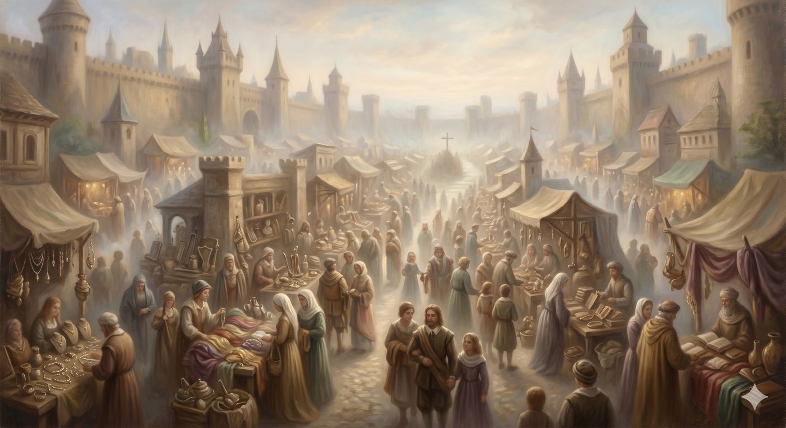

Vanity Fair
The market that never closes — the world's goods held with open hands, and the cost of refusing to be for sale.
"I have learned in whatever situation I am to be content... I can do all things through him who strengthens me." Philippians 4:11–13 (ESV)
The road now runs straight through the middle of a town, and in the town there is a fair that never closes. Bunyan calls it Vanity Fair, and it has been trading since long before the pilgrims arrived: a year-round market selling honours, titles, lands, pleasures, and delights of every kind — everything a person could want, all for sale at once. Christian and his companion Faithful cannot go around it; the way to the Celestial City runs right through the town square. And the moment they enter, they cause a stir, because they will not buy.
That is the test of this stretch of road, and it is subtler than the valleys behind it. The danger here is not a dragon or a dark night. It is a shopping street — the steady, cheerful pressure of a world that assumes everyone has a price, and is unsettled by anyone who does not. The question Vanity Fair asks is simply this: what are you for sale for? And learning to answer it well is most of what this landmark teaches.
Part OneHeld with open hands
Notice first what the fair sells: not obviously evil things, for the most part, but goods — real ones. Honour, comfort, security, pleasure, success. The trouble was never that these things are wicked. Most of them are gifts. The trouble is the grip — the way good things become ultimate things, the way a gift quietly becomes the reason you live, until you would trade almost anything to keep it. That is what it means to be a citizen of Vanity Fair rather than a pilgrim passing through: not that you handle the world's goods, but that they handle you.
The pilgrim's posture toward all of it is open hands. The things of this world are to be received with gratitude, used well, enjoyed without apology — and held loosely, ready to be set down. Paul names the freedom exactly: he has learned, he says, to be content with plenty and with hunger, with abundance and with need, because his life is anchored somewhere the market cannot reach. The open hand can receive a gift and can also let it go; the clenched fist can do neither. The pilgrim walks through the fair able to enjoy what is good precisely because he is not enslaved to it.
📖 The Scripture behind this Direct›
The claim: The world’s goods are mostly real gifts, to be received with gratitude and held with open hands; the danger is not the things but the grip — a good thing becoming an ultimate thing.
- 1 Timothy 6:17 (ESV) — “… God, who richly provides us with everything to enjoy.”The good things are God’s provision, given to enjoy — not inherently evil.
- Philippians 4:11–12 (ESV) — “I have learned in whatever situation I am to be content … abundance and need.”Contentment anchored beyond circumstance — able to hold plenty or hunger loosely.
- Matthew 6:24 (ESV) — “You cannot serve God and money.”The peril is the grip that makes a good thing a rival master.
The goodness of created gifts and the danger of the grip are both stated directly; 'open hands' is the page's image for the contentment Paul describes.
In plain terms
The problem with money, status, and comfort is almost never the things themselves. It is the grip. A good thing becomes a dangerous thing the moment it becomes the thing you cannot live without.
Open hands can hold a gift and still let it go. That is the freedom on offer here — not giving everything up, but holding it all loosely enough that none of it owns you.
Part TwoNo secular life
But a pilgrim does not merely resist the fair; he has work to do while passing through it, and the road has a surprising amount to say about that work. One of the most quietly revolutionary ideas the Reformation recovered was that there is no such thing as a secular job — only secular attitudes toward work.
The medieval world had sorted life into two tiers: a sacred life for monks and priests, and an inferior, worldly life for everyone else — the farmer, the merchant, the mother. The Reformers read Scripture and found no such ladder. Every honest occupation, Luther insisted, is a calling from God; the milkmaid tending her cows serves him as truly as the priest at the altar. Whatever you do, Paul wrote, work heartily, as for the Lord and not for men. The carpenter's bench, the teacher's lesson, the nurse's round, the spreadsheet's column — each is a place where a person made in God's image can bring that image to bear, in conscious service to the One who gave both the work and the worker. The fair sells the lie that your work is only worth what it earns you. The gospel says your work is worship, whatever it pays.
Part ThreeThe cost, and the companion
Bunyan does not let us pretend the fair is harmless. When Christian and Faithful refuse to buy, the town turns on them; they are mocked, beaten, put on trial before a rigged court, and Faithful is condemned and put to death in the public square. He keeps faith to the very end, and Bunyan shows him carried straight up to the Celestial City — the first of the two friends to arrive, by the shortest road of all. It is the starkest moment on the journey: witness can cost everything, and sometimes has.
And yet the road does not end in the square. Out of the same town, a man named Hopeful — moved by the way Faithful lived and died — leaves the fair and joins Christian on the way. One witness falls; another is born from the watching. This is the deep pattern of the whole journey surfacing again: you do not walk alone, and even a death in Vanity Fair is not wasted. The companion lost at the City of Destruction, the friend gained in the market — the road has been quietly insisting all along that pilgrims are given to one another, and that the King loses none of them, not even the ones the fair puts to death.
One witness fell in the square; another was born from the watching. The King wastes nothing.
Christian and Hopeful leave the town together, and for a while the way is easy and pleasant — which, on this road, is precisely when a pilgrim should grow watchful. For just ahead lies a meadow that runs alongside the path, softer underfoot than the road itself, and the temptation to leave the hard way for the easy one is about to lead somewhere terrible.